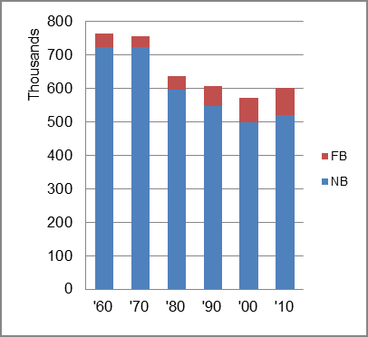

The foreign-born (FB) population increased from 38,971 in 1960 to 81,734 in 2010. That was an increase of 109.7 percent. The foreign-born share changed from 5.1 percent to 13.6 percent.
The share of the overall population that was native-born (NB) decreased by 28.9 percent.
District of Columbia: Population 1960-2010 
The first chart below shows the three population change factors for three periods adjusted for annual average amounts. Net immigration (NIM) was the primary factor adding population in the first two periods, replaced by NDM in the most recent period.
The second chart shows the same data but with an adjustment to reflect births to immigrants shifted to NIM. In it, the relative positions of NIM in the first two periods and NDM in the most recent period remained unchanged.
Washington, DC: Sources of Population Change 1990-2013 Washington, DC: Sources of Population Change (Adjusted) 1990-2013
B-D NDM NIM B-D NDM NIM 90-'99 47.7% neg. 52.3% 90-'99 22.2% neg. 77.8% 00-'09 48.8% neg. 51.2% 00-'09 6.1% neg. 93.9% 10-'13 32.8% 47.1% 20.5% 10-'13 18.1% 47.1% 34.8%